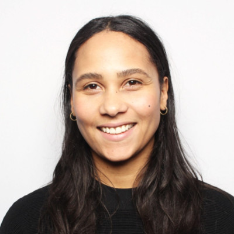

Heidi F. Enger Otone
Jeg jobber med kommunikasjon, markedsføring og innhold, i hele løpet fra planlegging til produksjon. Jeg er god på å gjøre komplekst fagstoff enkelt, gjøre innsikt om til budskap og tilpasse kommunikasjon til ulike målgrupper. Jeg har lang erfaring fra finansbransjen, hvor jeg blant annet har hatt ansvar for markedssamarbeid med medlemsorganisasjoner, distributører og andre partnere.
/Hva gjør jeg
Innhold, kommunikasjon og historiefortelling
- Research til kundehistorier og finne intervjuobjekter.
- Artikler, kundehistorier og kampanjesider.
- Nyhetsbrev
- SoMe-poster
- Gjør komplekst fagstoff enkelt og forståelig
- Tilpasser budskap, språk og format til målgruppe og kanal
- Pressemeldinger
- Proaktiv mediekontakt og oppfølging
- Medieovervåking og -analyse
Kampanjer og partnermarkedsføring
- Setter retning med årshjul og prioriteringer sammen med partnere
- Følger opp budsjett og mediemiks
- Samarbeider med reklame- og mediebyrå fra brief til lansering
- Bygger budskap på innsikt fra analyser og brukerundersøkelser
CRM og nyhetsbrev
- Planlegger og skriver segmenterte nyhetsbrev og app-varsler
- A/B-tester emnefelt og budskap
- Følger opp resultater og bruker dem i neste runde
Foto og video
- Ansvarlig for fotoredaksjon og forvaltning av bilder
- Oppsett og administrasjon av DAM (Digital Asset Management), inkludert leverandørkontakt
- Planlegging og gjennomføring av fotoopptak for profilbærende bilder og bilder til bildebank. Ansvar for kontakt og avtaler med fotografer og byråer.
- Foto og fotoredigering
- Video og enkel videoredigering
- Innhold til sosiale medier